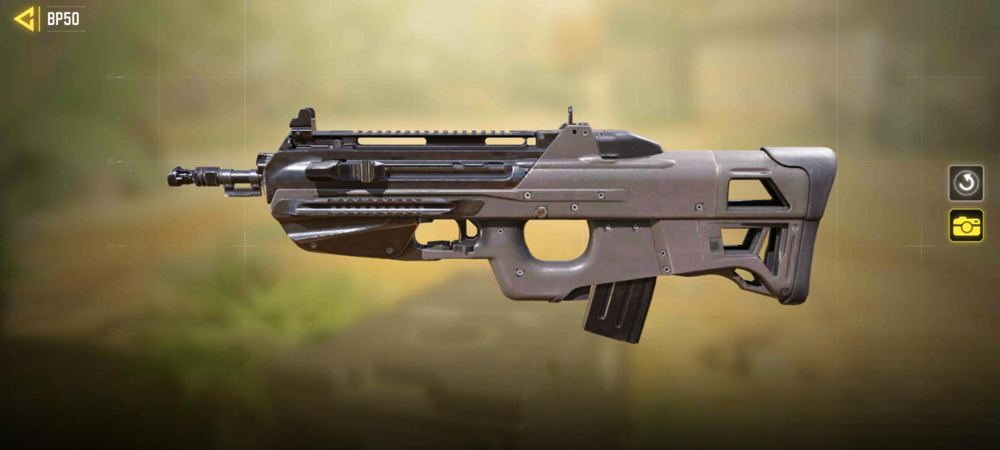

Analizamos los buffs y nerfs del último parche para traerte las configuraciones de armas (Gunsmith) más efectivas.
Análisis del Meta: ¿Por qué la BP50 sigue dominando?
Seamos sinceros: todos esperábamos que Activision nerfeara la BP50 hasta el suelo en esta actualización (algo que se rumorea para la próxima temporada, revisa las últimas filtraciones aquí). Pero, para sorpresa de muchos, el arma sigue siendo una bestia absoluta.
¿Qué hace que esta arma esté rota?
El problema no es solo su cadencia. Lo que realmente la hace "Meta" es su versatilidad. A diferencia de una Fennec, la BP50 mantiene un TTK (Time To Kill) ridículamente bajo a medias distancias. Es básicamente un subfusil disfrazado de fusil de asalto.
La Clase Definitiva para Ranked
Si quieres ganar puntos y subir, necesitas consistencia y buen posicionamiento. Si sientes que mueres mucho aunque tengas buena clase, te recomiendo leer nuestra Guía de Game Sense y Spawns. Mientras tanto, usa esta configuración para mapas como Standoff:
- Cañón: Leroy 438mm Rapid (Clave para esa cadencia extra).
- Culata: Moison (Movilidad para pre-aim).
- Munición: Cargador grande de 60 balas. (Obligatorio).
- Empuñadura Trasera: Polímero punteado.
- Ventaja: Desactivar (Opcional contra snipers).
La DR-H: El viejo confiable
Si prefieres precisión, la DR-H sigue siendo top tier con su munición especial OTM. Sin ese accesorio, el arma no pega lo suficiente. La clave es el posicionamiento: mantén distancias y usa coberturas. Con 3 balas al pecho bajas a cualquiera.
BP50
META ABSOLUTO

ANALISIS TÁCTICO: ¿POR QUÉ ES EL META?
El híbrido perfecto: La BP50 no es solo un fusil de asalto; es lo que en la comunidad competitiva llamamos un "híbrido". Tiene la movilidad de un subfusil (SMG) pero el alcance de daño de un fusil (AR). Esto rompe el equilibrio del juego porque te permite ganar duelos a corta distancia contra una Fennec y, dos segundos después, eliminar a un enemigo en "headglitch" a 30 metros.
La ciencia detrás de los accesorios:
-
Cañón Leroy 438mm Rápido: Muchos eligen silenciador, pero en Ranked Leyenda, cada milisegundo cuenta. Este cañón aumenta la cadencia de fuego. Al disparar más balas por segundo, reducimos el TTK (Time to Kill) de forma drástica, haciendo que el arma "borre" enemigos antes de que puedan reaccionar.
-
Cargador de 60 balas: No es opcional. Con una cadencia tan alta, el cargador de 30 balas se vacía en 1.2 segundos. Si te enfrentas a dos enemigos a la vez, necesitas las 60 balas para no morir recargando.
-
Ventaja Desactivar (Disable): En el meta actual donde todos usan "Slide Cancel" (deslizamiento), esta ventaja es tóxica pero necesaria. Si disparas a las piernas, ralentizas al enemigo, impidiendo que se deslice hacia cobertura. Es la contra perfecta a los "tryhards" de movimiento.
Veredicto del Experto: Úsala ahora. Es 100% seguro que recibirá un nerfeo de alcance en la próxima actualización de temporada. Aprovecha para subir esos puntos mientras dure.
BocaSilenciador Maxim
CañónLeroy 438mm Rápido
CulataSin Culata
MuniciónCargador .30 de 60 balas
AdhesivoAdhesivo Punteado